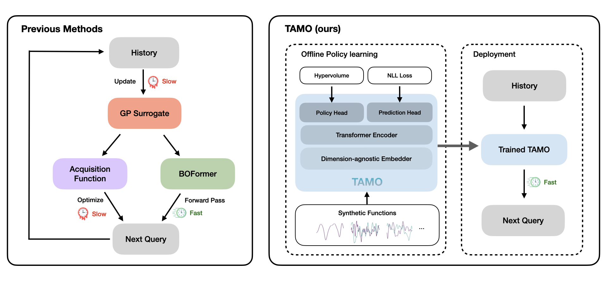
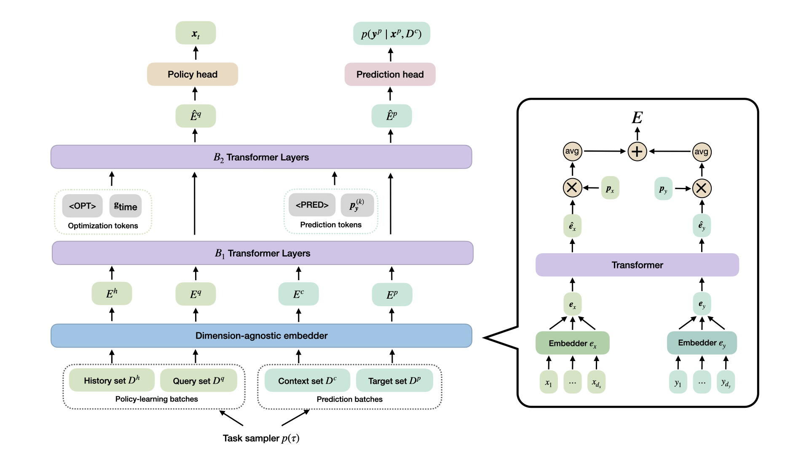
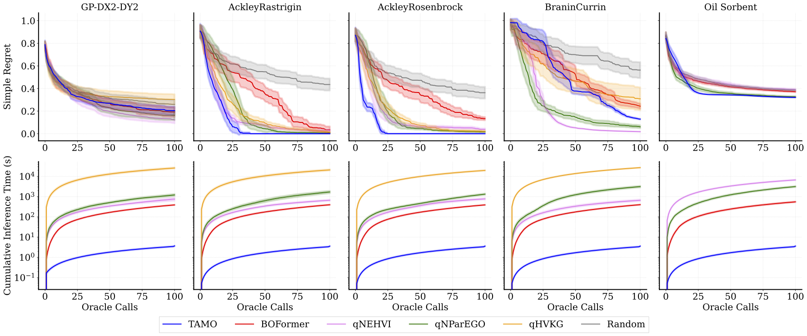
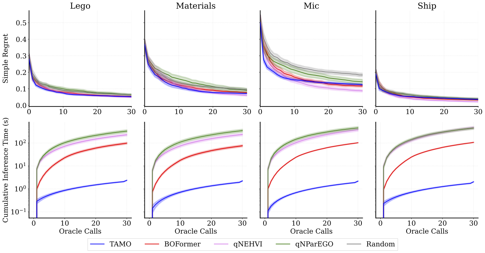
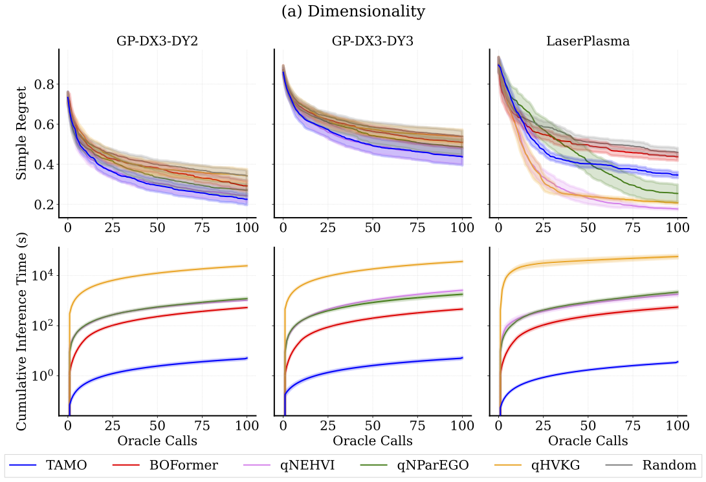
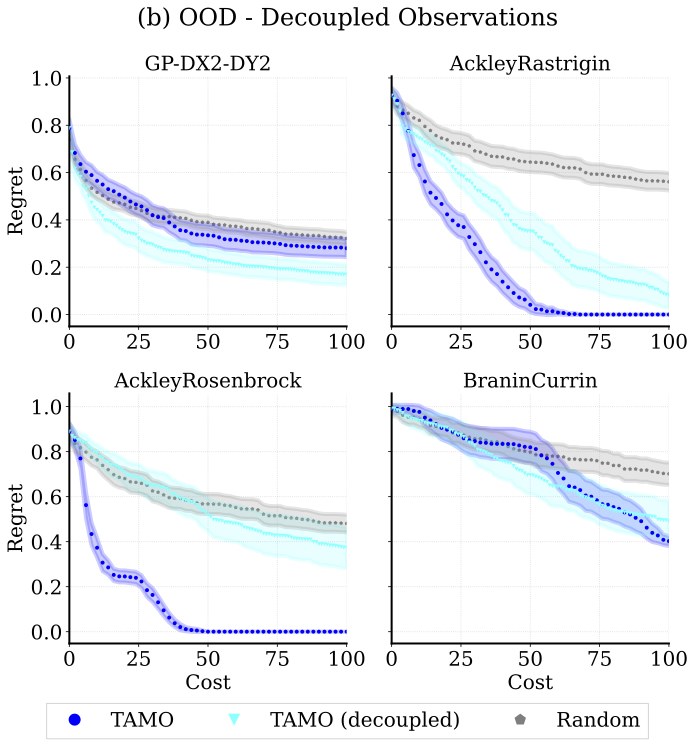

Abstract
Balancing competing objectives is omnipresent across science and engineering — drug efficacy versus toxicity, model accuracy versus latency, material strength versus weight. Multi-objective Bayesian optimization (MOBO) is the standard solution: fit a probabilistic surrogate to each objective, then optimize an acquisition function to choose the next design. In practice it requires tailored choices of surrogate and acquisition that rarely transfer, is myopic when multi-step planning is needed, and adds refitting overhead in parallel or time-sensitive loops.
We present TAMO, a fully amortized, universal policy for multi-objective black-box optimization. TAMO uses a transformer architecture that operates across varying input and objective dimensions, enabling pretraining on diverse, heterogeneous tasks and transfer to new problems without retraining: at test time, the pretrained model proposes the next design with a single forward pass.
Across synthetic benchmarks and real tasks, TAMO reduces proposal time by 50–1000× versus alternatives while matching or improving Pareto quality under tight evaluation budgets. These results show that transformers can perform online multi-objective optimization entirely in-context, eliminating per-task surrogate fitting and acquisition engineering, and open a path to foundation-style, plug-and-play optimizers for scientific discovery workflows.
The Transferability and Overhead Problem in Multi-Objective Bayesian Optimization
Real-world design problems rarely have a single number to maximize. The answer is not a single point but a Pareto front: the set of designs where no objective can be improved without hurting another. The goal of multi-objective optimization is to approximate this front with as few costly evaluations as possible. One popular way to assess solution quality is the hypervolume (HV) indicator: For a reference point \(r \in \mathbb R^{d_y}\), the hypervolume \(\text{HV}(\mathcal{P}(\mathcal{X}) | r)\) measures how much of the objective space between \(r\) and the approximated frontier \(\mathcal{P}(\mathcal{X})\) is "covered" by Pareto-optimal points.
Classical MOBO refits a statistical surrogate — typically a Gaussian process (GP) — at every step and re-optimizes an acquisition function (AF). It works, but:
- The choice of surrogate and acquisition rarely transfers to the next problem.
- The per-step overhead from GP refitting and AF optimization scales quickly in parallel settings.
The question this paper asks is simple: what if a single pretrained model could replace both, for any problem, in any dimensionality?
Method: in-context multi-objective optimization
TAMO is a transformer-based framework trained on a large, diverse corpus of synthetic optimization tasks. At test time, it conditions on the optimization history and suggests the next query in a single forward pass.

Architecture

Pretraining
TAMO is pretrained offline on a distribution of synthetic multi-objective tasks drawn from Gaussian process priors with varied kernels, length scales, and input/output dimensionalities. Because the embedder is dimension-agnostic, a single pretraining run can draw tasks with different numbers of features and objectives.
Two training signals share the same transformer backbone:
- An optimization objective, trained via reinforcement learning. Each episode is a synthetic black-box optimization task. At step \(t\), the policy \(\pi_\theta\) sees the history \(\mathcal{H}_{1:t-1} = \{(\mathbf{x}_i, \mathbf{y}_i)\}_{i=1}^{t-1}\) and proposes the next query from a candidate set.
- A prediction objective, in which the same backbone models the posterior predictive at test points given a context set. This auxiliary task regularizes the representations and stabilizes policy learning.
Results
We evaluate TAMO on synthetic and real-world multi-objective benchmarks against GP-based MOBO baselines (qNEHVI, qNParEGO, qHVKG) and the amortized baseline BOFormer.


Generalization
One interesting result is that one pretrained model transfers across heterogeneous problem structures with no retraining — both to unseen input dimensionalities and to settings where each objective is observed independently.


| Aspect | Finding |
|---|---|
| Pareto quality | Matches or beats specialized GP baselines and amortized methods on simple regret under tight evaluation budget. |
| Wall-clock speed | Orders of magnitude faster proposal time than GP-based MOBO and the amortized baseline, BOFormer, which still relies on task-specific surrogates. |
| Generalization | One pretrained model across input/output dimensions and across function families, with no retraining. |
| Single-objective BO | Applies effortlessly to single-objective optimization, yielding competitive results against GP baselines. |
BibTeX
@inproceedings{zhang2025incontextmoo,
title = {In-Context Multi-Objective Optimization},
author = {Zhang, Xinyu and Hassan, Conor and Martinelli, Julien and Huang, Daolang and Kaski, Samuel},
booktitle = {OpenReview Preprint},
year = {2025},
url = {https://openreview.net/forum?id=8dd024273507acb18827876a24b27d1148a2126b}
}